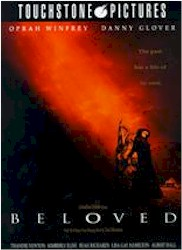
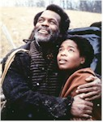
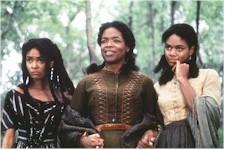
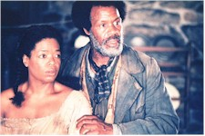

Contents | Features | Reviews | News | Archives | Store |
 |
|
| Movie Credits | Buy It! |
Beloved
Review by Gregory Avery
Posted 16 October 1998
|  | Directed by Jonathan Demme. Starring
Oprah Winfrey, Danny Glover, Screenplay by Akosua Busia, Richard LaGravenese |
Beloved, Jonathan Demme's film of the Toni Morrison novel, starts off with a bang. A gruesome piece of brutality is flung into the kitchen of a home in rural Ohio in the 1860s, and Sethe, the woman who owns the house, calmly sweeps into the room and proceeds with the gruesome business of putting everything right again, even as the other inhabitants of the house flee in fright. Supernatural forces are at work, it turns out, and Sethe, with her practiced efficacy, has comes to live in this house whether she likes them or not. Sethe's manner is the equivalent of Morrison's prose tone, which seeks to address the sometimes irrelievable grievances suffered by African-Americans who were born and lived in the U.S. as slaves, combined with a folkloric mysticism (or, for the semioticians out there, magic realism) where the characters come to live with and regard paranormal activities as part of everyday life. Part ghost story, part psychological drama, and part harrowing depiction of a dark period of American history, the picture ends up being something of a jumble, a strange, primordial, ultimately baffling experience, where the pains and concerns are so down deep that the filmmakers themselves seem to have trouble making sense of them, let alone the characters in the story.
Sethe (Oprah Winfrey) and her teenaged daughter, Denver (Kimberly Elise), are visited by Paul D. (Danny Glover), an essentially decent man who loves Sethe and knows her from the days when they both lived at a place called Sweet Home, as slaves. Denver, who regards Paul D. with a dark, level-eyed stare that signals suspicion and, sometimes, barely veiled contempt, precociously asks the adults why they ever left Sweet Home, since they spend most of their time talking about it. What she doesn't know, and what Sethe is probably trying to protect her from, is that they talk about Sweet Home because of what they experienced there. In sequences that seem to burst out of the film in white, burning, jagged shards, we see some of the utter physical degradation and savagery that they had to endure -- mass hangings, whippings (both Sethe and Paul D. carry vivid signs of mortification upon their bodies), and, for the women, sexual abuse. The violence is meant to be disturbing, even disorientating (and I'm figuring will be the main point of conversation regarding the film, in the weeks to come), but it is meant to provide a correlation to the main part of Sethe's prior history, which is enigmatically alluded to during the first third of the film. As it turns out, Sethe's neighbors not only shun her place in Ohio because it is haunted, but because of an incident that occurred there earlier, not long after she fled from Sweet Home, where she committed an appalling, primal act in rebuke to the white men who have, in turn, treated her in an appalling fashion. Sethe acts in a way that is the ultimate, stone-cold rebuke towards ever having to allow this sort of treatment again.
Sethe has been both abandoned by a husband, who was supposed to meet her in Ohio, and has lost at least one child, as a result of her experiences at the hands of white men. Demme and his superb cinematographer, Tak Fujimoto, shoot the flashback sequences showing Sethe's escape from her past and her arrival in a freeperson community in Ohio (with Lisa Gay Hamilton playing the young Sethe) in a quality that gives them a grainy, burnt sienna look to them. (The portions of the story-proper are photographed with austere, magnificent clarity.) Sethe committed an insane act which has caused her to be ostracized by her neighbors -- it turns out they shun her not just because her house is haunted -- while throwing down a total, stone-cold rebuke to those who have rebuked her, a rather extreme way of saying that she will never again condone or consent what white men have done to her or those like her. But we see why Sethe does what she does -- how panic and fear drove her, for a few moments, to go over the line, and placed her, like John Fowles' "French lieutenant's woman", forever "beyond the pale".
After Paul D. comes to stay with Sethe and Denver, the supernatural disturbances inside the house cease. Then, rising out of the waters of the Mississippi, comes a girl dressed in widow's-weeds, and, in a sequence that manages to be both beautiful and disturbing at the same time, with her face and body covered in ladybugs. She is Beloved (Thandie Newton), who first appears at Sethe's house wrapped around a tree trunk in the front yard. She not only has the same name as a child whom Sethe lost, but is also the same age the child would have been had she survived. Yet she makes rasping vocalizations and moves about in the disjointed manner of a newborn infant. Newton, an Australian actress, is doubtless playing the role the way she was asked to, but Beloved comes across immediately as too freakish and weird a creature for us to believe that anyone, let alone Sethe, would both readily welcome her into the household, but allow her to stay and become part of her family.
Beloved is, of course, an objectification of all the past pain and suffering, of African-Americans in general and the story's characters in particular, and, just as we suspect, she systematically rends Sethe's household apart, driving away Paul D. and alienating Denver, until, like a wrathful homunculus, she completely attached herself to Sethe. Why does Sethe allow this to happen? Does she carry a burden of shame or self-loathing, or is she so desperate to regain her lost child that she'll accept even so grotesque a parody of her into her life? The film never makes this clear, and I think it is because the filmmakers could not make up their minds as to how they wanted Sethe, ultimately, to be perceived, either as martyr or saint or as a woman whose life is thrown in disarray by her own psychological torments. Sethe has been victimized, but she chooses to allow Beloved to stay in her house even after she has become an obviously destructful influence. Like Miss Havisham in "Great Expectations", she closes her doors and windows and tries to, irrationally, freeze time inside her closed world. The film appears to be trying to depict her as a noble personage, when she actually comes across as trapped by her own devices and destructive, in her own way, to herself and others.
This is Oprah Winfrey's first feature film appearance since the 1986 Native Son, and her first lead role. Most people remember her best from her marvelous performance as Sofia in The Color Purple, where she almost kills a man in the street with one mighty roundhouse punch. Winfrey is, I think, essentially too sensible a person to play Sethe with broad, overweening pathos, but I think she misidentified the character's strength and resilience as something to be admired, along with her endurance. The last third of the film, where Sethe withstands wave after wave of suffering, becomes truly Gothic, and her character simply becomes too remote and incomprehensible. Since the film's central metaphor doesn't make any sense, Sethe seems to be suffering simply for the sake of holding onto our sympathy, not by winning it in any particular way. It is during the final third of the film (which runs over two-and-a-half hours -- that's a lot of suffering) that Kimberly Elise comes into her own, emerging with a strong performance that shows Denver struggling, and succeeding, in taking up the initiative to put things back together for her and her mother. It is also during this sequence that the film springs its most gratuitously shocking image on us, at the same time that it summons up its most grand moment: a quorum of the local churchwomen arrive at Sethe's front gate, and, lifting their voice in song, make an invocation which is meant to drive the evilness from Sethe's house once and for all.
The character one ends up feeling the most for is the grandmotherly Suggs, who is seen in flashbacks and is initially identified, rather confusingly, as "Baby Suggs", supposedly because of her diminutive stature and endearing qualities. The filmmakers have chosen the veteran actress Beah Richards to play Suggs, and she does a great job at playing this rough-hewn yet all-embracing spirit, who regularly preaches to the local freeperson community standing atop a flat stone in the forest, exhorting them to exercise compassion for themselves as well as for others. (Community also figures strongly in Morrison's current novel, "Paradise".) Yet the picture "Beloved" does not show compassion towards Sethe, which is why the ending, and the picture as a whole, rings hollow. I could see why Demme was drawn to the project, as he has had success handling unusual material in the past, from Melvin and Howard to Married to the Mob and Silence of the Lambs. However, one feels that Sethe was meant to be seen as some sort of role model, but of what, after our own perusal and reactions to the story, is stubbornly unclear. One naggingly feels that a more honest evaluation of Sethe's actions, rather than an attempted glorification of them, would have been more in order, and might not have left one in such a sour, conflicted mood after this long, rather benighted film has found its way to a close.
Contents | Features | Reviews | News | Archives | Store
Copyright © 1999 by Nitrate Productions, Inc. All Rights Reserved.